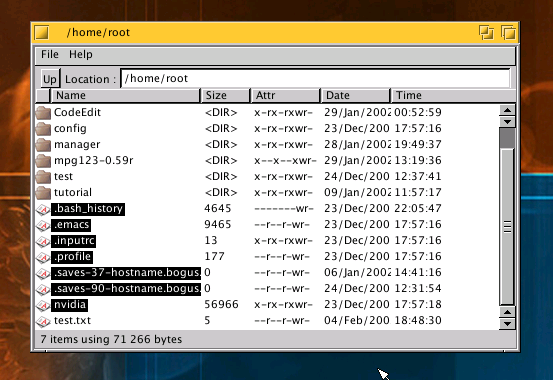

Manager v0.0.1
Manager is a simple file manager for AtheOS. As with this release, the only features it has are the basic DirectoryView features (file copy/deletion, browsing through directories), plus two other :
- File types support : if you click on one file, its type is displayed on the information bar, if you double-click on it, the appropriate application is launched (for exemple CodeEdit for *.c, *.cpp and *.h files)
- Multiple selection size calculation : if you select multiple files, the size of the whole selection is displayed on the information bar.
Screenshot

Downloads